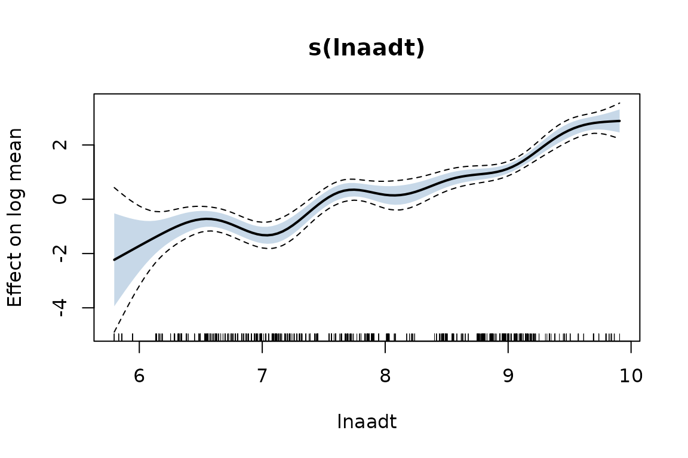
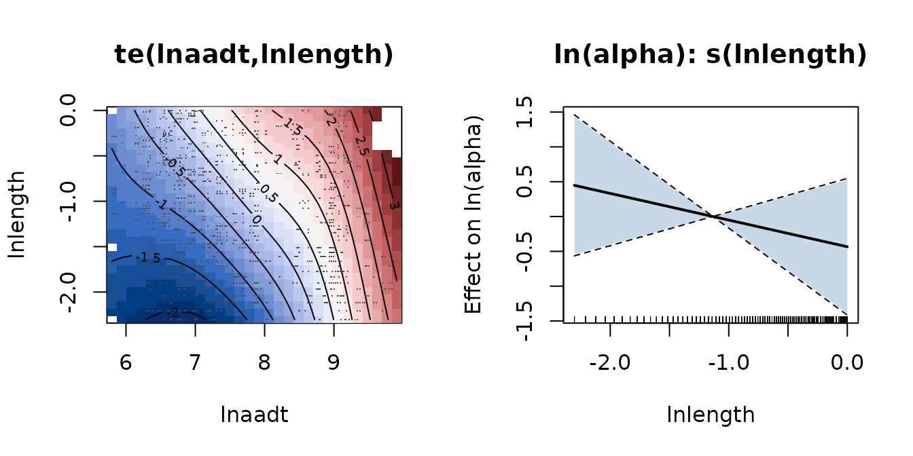
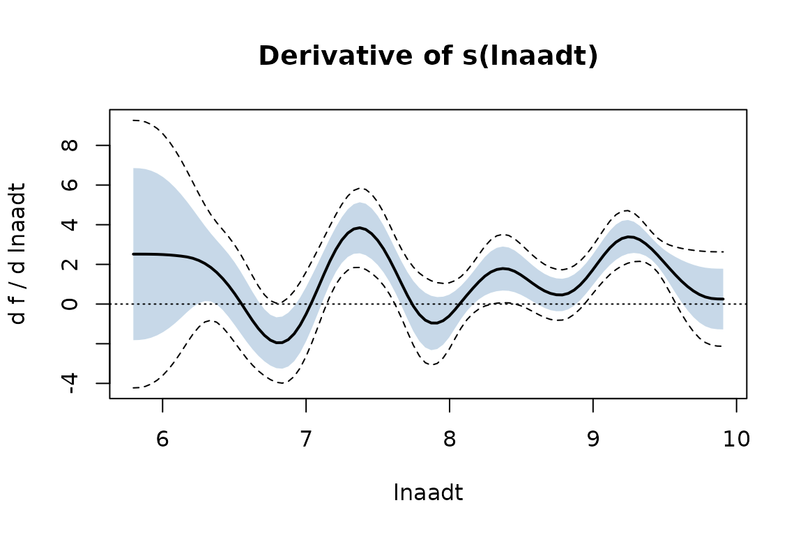

Smooth effects: generalized additive count models
Source:vignettes/smooth-effects.Rmd
smooth-effects.RmdA linear term such as lnaadt assumes that every unit
increase in log traffic changes the log crash rate by the same amount.
Often the response bends: flat at low volumes, steep in the middle,
leveling off. A smooth term lets the data choose the
shape, while a penalty keeps it from following noise.
flexCountReg accepts the smooth terms of the mgcv package,
s(), te(), ti() and
t2(), in the formulas of countreg() and
countreg_rp(): the mean, the distribution parameters, the
zero model and, for random parameters, the heterogeneity in their means
and variances. The model is a distributional generalized
additive model: any parameter of any count family can depend smoothly on
covariates.
library(flexCountReg)
data("washington_roads")1. A smooth traffic-volume effect
m <- countreg(Total_crashes ~ s(lnaadt) + speed50 + offset(lnlength),
data = washington_roads, family = "NB2")
summary(m)
#> Call:
#> countreg(formula = Total_crashes ~ s(lnaadt) + speed50 + offset(lnlength),
#> data = washington_roads, family = "NB2")
#>
#> Model: countreg | family: NB2 | optimizer: BFGS
#> Iterations: 6
#> Convergence: successful convergence
#>
#> Coefficients (standard errors: Bayesian (penalized Hessian)):
#> Estimate Std. Error z value Pr(>|z|)
#> (Intercept) -0.243 0.068 -3.58 0.00035 ***
#> speed50 -0.450 0.112 -4.02 5.8e-05 ***
#> ln(alpha) -1.384 0.305 -4.54 5.6e-06 ***
#> ---
#> Signif. codes: 0 '***' 0.001 '**' 0.01 '*' 0.05 '.' 0.1 ' ' 1
#> Offset: offset(lnlength) (coefficient fixed at 1)
#>
#> Smooth terms (approximate tests):
#> edf k lambda Chi.sq p-value
#> s(lnaadt) 7.85 9 0.00734 499.09 <2e-16
#> Total effective degrees of freedom: 10.85
#>
#> Log-likelihood: -1055.656 | AIC: 2133.014 | BIC: 2190.677
#> N: 1501The smooth is summarized by its effective degrees of
freedom (EDF): 1 for a straight line, up to the basis dimension
k - 1 for an unpenalized curve. Its coefficients are not
shown one by one: they only describe the curve together. The test is an
approximate test that the whole smooth is zero.
plot_smooths() shows each smooth on the scale of its
linear predictor, with a pointwise band (shaded) and a simultaneous band
(dashed) that covers the whole curve with 95% probability:
plot_smooths(m)
smooth_estimates() returns the same values as a data
frame, for your own plots or tables:
head(smooth_estimates(m, n = 50, seed = 1))
#> parameter term lnaadt fit se lwr upr
#> 1 mean s(lnaadt) 5.796058 -2.231157 0.8738461 -3.943864 -0.5184504
#> 2 mean s(lnaadt) 5.879952 -2.019996 0.7028794 -3.397614 -0.6423776
#> 3 mean s(lnaadt) 5.963846 -1.809243 0.5445206 -2.876484 -0.7420022
#> 4 mean s(lnaadt) 6.047741 -1.600164 0.4097921 -2.403341 -0.7969857
#> 5 mean s(lnaadt) 6.131635 -1.394872 0.3096440 -2.001763 -0.7879805
#> 6 mean s(lnaadt) 6.215530 -1.196342 0.2476097 -1.681648 -0.7110357
#> slwr supr
#> 1 -4.882010 0.4196950
#> 2 -4.152213 0.1122210
#> 3 -3.461071 -0.1574147
#> 4 -2.843287 -0.3570403
#> 5 -2.334191 -0.4555523
#> 6 -1.947477 -0.44520642. How smooth?
The amount of smoothing is chosen automatically. For each smooth a smoothing parameter \(\lambda\) multiplies its wiggliness penalty \(b'Sb\), and the model maximizes
\[ \ell(\theta) - \tfrac{1}{2} \sum_j \lambda_j b_j' S_j b_j . \]
The \(\lambda_j\) are selected by
generalized Fellner-Schall updates (Wood and Fasiolo 2017), which
approximately maximize the restricted marginal likelihood (REML). They
are stored in the fit, and sp fixes them:
m$model$smooth_lambda
#> [1] 0.007341266
stiff <- countreg(Total_crashes ~ s(lnaadt) + speed50 + offset(lnlength),
data = washington_roads, family = "NB2", sp = 100)
stiff$model$smooth_table[, c("term", "edf", "lambda")]
#> term edf lambda
#> 1 s(lnaadt) 1.090613 100A large \(\lambda\) shrinks the
smooth to its unpenalized part (here a straight line). The
log-likelihood’s degrees of freedom are the total EDF, so
AIC() compares smooth and parametric models fairly:
3. Smooth distribution parameters and surfaces
Any distribution parameter can be smooth. Here the NB2 dispersion may
vary smoothly with segment length, and traffic and length interact
through a tensor-product surface te():
m2 <- countreg(Total_crashes ~ te(lnaadt, lnlength) + speed50,
data = washington_roads, family = "NB2",
dis_param_formula_1 = ~ s(lnlength, k = 5))
m2$model$smooth_table[, c("parameter", "term", "edf", "p.value")]
#> parameter term edf p.value
#> 1 mean te(lnaadt,lnlength) 7.929393 1.617836e-89
#> 2 ln(alpha) s(lnlength) 1.000000 3.758677e-01
op <- par(mfrow = c(1, 2))
plot_smooths(m2)
par(op)The dispersion smooth has shrunk to a straight line (EDF 1): there is no evidence that the overdispersion changes nonlinearly with length.
4. Smooths with random parameters
countreg_rp() accepts smooth terms in its fixed part and
in the heterogeneity formulas. Three ideas look alike but are
different:
- a random parameter (
rpar_formula) is a coefficient that varies across sites with an unknown distribution, integrated by simulation; - a smooth is a nonlinear function of an observed variable;
- a smooth heterogeneity in means
(
het_mean_formula = ~ s(z)) lets a random parameter’s mean change smoothly with an observed site attribute.
They can be combined:
rp <- countreg_rp(Total_crashes ~ s(lnaadt, k = 8) + offset(lnlength),
rpar_formula = ~ -1 + speed50, data = washington_roads,
family = "NB2", group_var = "ID", ndraws = 50)
summary(rp)
#> Call:
#> countreg_rp(formula = Total_crashes ~ s(lnaadt, k = 8) + offset(lnlength),
#> rpar_formula = ~-1 + speed50, data = washington_roads, family = "NB2",
#> ndraws = 50, group_var = "ID")
#>
#> Model: countreg_rp | family: NB2 | optimizer: BFGS
#> Iterations: 22
#> Convergence: successful convergence
#>
#> Coefficients (standard errors: Bayesian (penalized Hessian)):
#> Estimate Std. Error z value Pr(>|z|)
#> (Intercept) -0.1948 0.0662 -2.94 0.0032 **
#> speed50:Mean -0.5965 0.1425 -4.19 2.8e-05 ***
#> speed50:St.Dev 0.4737 0.1961 2.42 0.0157 *
#> ln(alpha) -1.3819 0.3148 -4.39 1.1e-05 ***
#> ---
#> Signif. codes: 0 '***' 0.001 '**' 0.01 '*' 0.05 '.' 0.1 ' ' 1
#> Offset: offset(lnlength) (coefficient fixed at 1)
#>
#> Smooth terms (approximate tests):
#> edf k lambda Chi.sq p-value
#> s(lnaadt) 5.13 7 0.0742 524.43 <2e-16
#> Total effective degrees of freedom: 9.13
#>
#> Log-likelihood: -1067.197 | AIC: 2152.647 | BIC: 2191.24
#> N: 1501 | panels: 507A smooth can absorb heterogeneity that a random parameter’s standard
deviation would otherwise carry, so compare the random parameters’
standard deviations with and without the smooth. Smooth terms are not
allowed in rpar_formula: a random coefficient on each basis
column is not a penalized smooth.
5. Smooths in random-effects panel models
The random-effects panel models renb(),
repois(), poislind_re() and
negmultinom() accept smooth terms in the same way, with the
panels as the independent units:
re <- repois(Total_crashes ~ s(lnaadt, k = 8) + speed50 + offset(lnlength),
group_var = "ID", data = washington_roads)
re$model$smooth_table[, c("term", "edf", "lambda", "p.value")]
#> term edf lambda p.value
#> 1 s(lnaadt) 4.986079 0.0718 4.214872e-71Fixed-effects models (countreg_fe()) accept smooths of
variables that change within units, such as s(lnaadt). A
smooth of a variable that is constant within units is absorbed by the
fixed effects, and is refused.
Finite mixtures and latent-class models (countreg_mix(),
countreg_lc()) give each component its own smooth, and the
class membership can also be smooth
(mixing_formula = ~ s(x), or
membership_formula in countreg_lc()):
mx <- countreg_mix(Total_crashes ~ s(lnaadt, k = 8) + offset(lnlength),
data = washington_roads, family = "POISSON",
components = 2, n_starts = 3, seed = 1)
mx$model$smooth_table[, c("parameter", "term", "edf", "lambda")]
#> parameter term edf lambda
#> 1 Component1:mean s(lnaadt) 5.257868 0.063
#> 2 Component2:mean s(lnaadt) 1.000000 3560006. Inference and agreement with mgcv
Standard errors are Bayesian by default: the covariance of the
estimates is \((H + S_\lambda)^{-1}\),
with \(H\) the negative Hessian of the
log-likelihood and \(S_\lambda\) the
total penalty. Robust (stderr = "robust") and
cluster-robust (cluster = ~ site) versions use the same
bread.
With the smoothing parameters fixed at those of
mgcv::gam(), the estimates, log-likelihood, EDF and
standard errors equal mgcv’s for the Poisson and negative binomial
models (with the dispersion fixed). The selected smoothing parameters
are close to mgcv’s REML values (within about 5% in these data); the
Fellner-Schall update ignores how the Hessian changes with \(\lambda\), which REML includes.
The tests of smooth terms are approximate (they follow Wood 2013 but
ignore the uncertainty in \(\lambda\)),
and the log-likelihood’s degrees of freedom are the EDF without the
smoothing-parameter correction that mgcv::logLik.gam()
adds.
7. More kinds of smooth
Any smooth class of mgcv can be used. Some that are often useful for count data:
-
s(lnaadt, by = speed_group), with a factorby: a separate curve for each level (include the factor itself as a main effect); -
s(year, by = lnaadt), with a numericby: a varying coefficient, the effect oflnaadtchanging smoothly over the years; -
s(site, bs = "re"): Gaussian random intercepts for the levels of a factor, written as a penalized smooth; -
s(lnaadt, corridor, bs = "fs"): each corridor’s own curve, shrunk towards a common one; -
s(zone, bs = "mrf", xt = list(nb = nb)): a spatial effect of areas that is smoothed between neighboring areas (nblists each area’s neighbors).
washington_roads$speed_group <- factor(washington_roads$speed50,
labels = c("other", "50 mph"))
mb <- countreg(Total_crashes ~ s(lnaadt, by = speed_group, k = 6) +
speed_group + offset(lnlength),
data = washington_roads, family = "NB2")
mb$model$smooth_table[, c("term", "edf", "p.value")]
#> term edf p.value
#> 1 s(lnaadt):speed_groupother 3.204187 1.033674e-103
#> 2 s(lnaadt):speed_group50 mph 3.450732 2.108118e-13
op <- par(mfrow = c(1, 2))
plot_smooths(mb)
par(op)8. Checking smooth terms
Basis dimension. Each smooth has a maximum
flexibility set by k. smooth_check() compares
the residuals of neighboring observations, ordered by the smooth’s
covariate, with the overall residual variance. It uses the randomized
quantile residuals, which are standard normal for a correct count model.
A k-index clearly below 1 with a small p-value means the residuals still
follow the covariate, and a larger k should be tried:
small <- countreg(Total_crashes ~ s(lnaadt, k = 4) + offset(lnlength),
data = washington_roads, family = "NB2")
smooth_check(small)
#> parameter term k edf k_index p_value residuals
#> 1 mean s(lnaadt) 3 2.770066 0.9348829 0.005 quantileConcurvity. concurvity_fcr() reports
how much of each smooth the other terms of its linear predictor can
reproduce (0 to 1). Values near 1 mean the smooth’s shape is poorly
determined.
concurvity_fcr(m2)
#> parameter term observed worst
#> 1 mean te(lnaadt,lnlength) 8.587255e-04 1.063128e-01
#> 2 ln(alpha) s(lnlength) 3.576806e-33 3.247650e-29Derivatives. plot_derivatives() shows
where a smooth is increasing or decreasing, with pointwise and
simultaneous bands:

Calibration. A smooth can fit the mean and still
miss the zeros or the dispersion. calibration_by() compares
observed and predicted means, probabilities of zero and variances within
quantile groups of a covariate:
calibration_by(m, "lnaadt", groups = 5)
#> group n observed_mean predicted_mean observed_p0 predicted_p0
#> 1 [5.8,6.73] 301 0.14285714 0.13276194 0.8671096 0.8812940
#> 2 (6.73,7.22] 301 0.08305648 0.08516662 0.9335548 0.9208793
#> 3 (7.22,7.89] 299 0.24414716 0.25214260 0.8026756 0.7997339
#> 4 (7.89,8.93] 317 0.51419558 0.51932265 0.6593060 0.6527419
#> 5 (8.93,9.91] 283 1.38162544 1.41277532 0.3886926 0.4046796
#> observed_var predicted_var
#> 1 0.1428571 0.1465752
#> 2 0.1164120 0.0909499
#> 3 0.2992525 0.3223760
#> 4 0.7062852 0.7733261
#> 5 2.8396612 3.5483789Two-variable smooths can be drawn as surfaces masked away from the
data with plot_surface().
References
Ruppert, D., Wand, M.P. and Carroll, R.J. (2003). Semiparametric Regression. Cambridge University Press.
Wood, S.N. (2013). On p-values for smooth components of an extended generalized additive model. Biometrika, 100(1), 221-228.
Wood, S.N. and Fasiolo, M. (2017). A generalized Fellner-Schall method for smoothing parameter optimization with application to Tweedie location, scale and shape models. Biometrics, 73(4), 1071-1081.